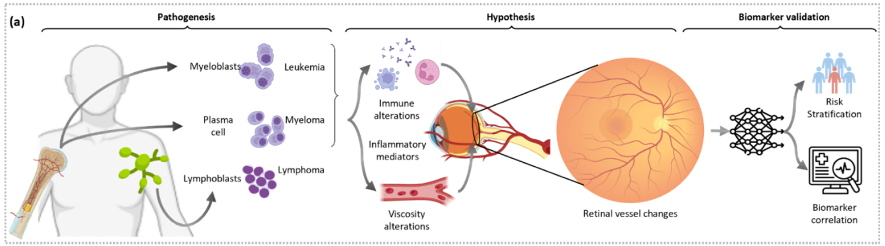
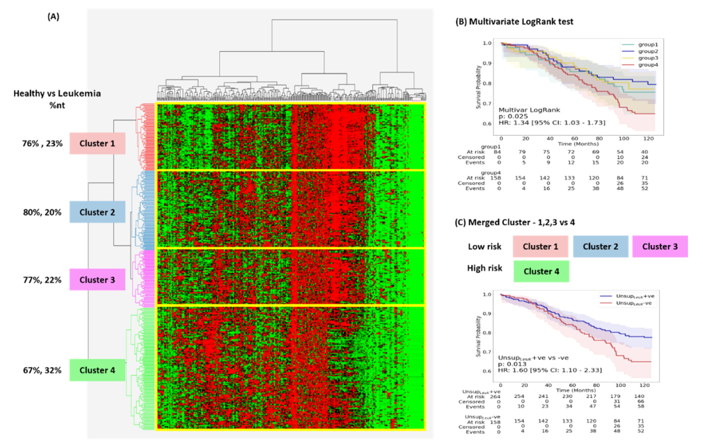
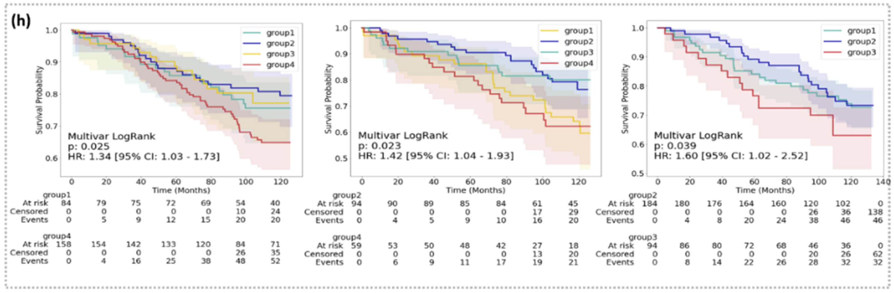
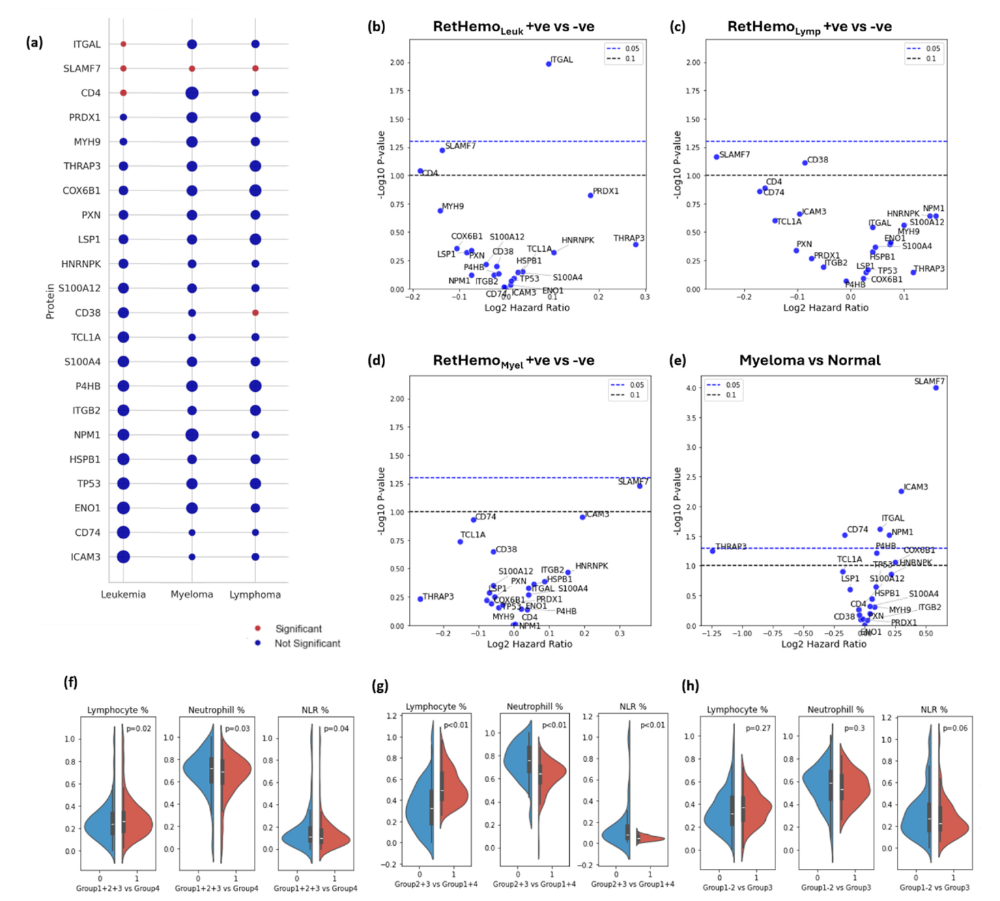

Read coverage of the RetHemo study:
Background Early detection of hematological malignancies improves long-term survival but remains a critical challenge due to heterogeneity in clinical presentation. Chronic inflammation is a key driver in hematologic cancers and is known to induce compensatory microvascular changes. High-resolution, non-invasive retinal imaging can allow the quantification of microvascular changes for the early detection of hematological malignancies.
Methods This study evaluated RetHemo, an explainable AI tool predicting hematological malignancy onset up to 10 years before diagnosis using retinal imaging in 1237 UK Biobank patients. Retinal vasculature features (curvature, tortuosity, branching angles) were extracted from segmented vessels, arteries, and veins, enabling high-risk subgroup identification and outperforming traditional clinical predictors.
Results RetHemo demonstrated significant predictive performance for leukemia (c-index = 0.611, HR = 2.45, 95% CI: 1.27–4.75, p = 0.027), myeloma (c-index = 0.636, HR = 6.69, 95% CI: 2.06–21.65, p = 0.006). Unsupervised hierarchical clustering based on retinal vasculature features identified distinct high-risk subgroups for leukemia (p = 0.013), myeloma (p < 0.001), and lymphoma (p = 0.034). Serum proteomics analysis revealed significantly elevated levels of inflammatory proteins, including ITGAL and SLAMF7, in high-risk patients. Comparison with clinical variables showed that RetHemo outperformed traditional clinical and hematologic parameters in stratifying at-risk individuals.
Conclusion These findings support the potential of AI-driven retinal biomarkers as a novel prognostic tool for early detection of hematological malignancies, enabling timely intervention and improved patient outcomes.

Fig. 1a — Pathogenesis of leukemia, myeloma, and lymphoma; the retinal-remodeling hypothesis (immune alteration, inflammatory mediators, viscosity changes → retinal vessel changes); and the biomarker validation pipeline (risk stratification and biomarker correlation).
Leukemia, myeloma, and lymphoma remain hard to catch early: their clinical presentation is heterogeneous, symptoms are often subtle, and together they account for roughly 10% of all malignancies with mortality rates that exceed more common cancers like prostate and breast cancer. Diagnostic delay matters enormously — emergency diagnoses have a 3-year survival rate of just 40%, versus 77% for cases caught through primary care. Chronic inflammation, a key driver of these cancers, is known to induce compensatory microvascular remodeling, and a growing body of evidence links hematological malignancies to early ocular changes: about 40% of newly diagnosed multiple myeloma patients already show pre-existing ocular alterations, and retinal vessel density changes have been documented at diagnosis and even in leukemia remission.
RetHemo asks whether the retina — imaged non-invasively and cheaply via routine fundus photography — already carries a measurable signature of a hematological cancer that hasn't been diagnosed yet. Using 1,237 UK Biobank patients with pre-diagnosis fundus scans, this study builds an explainable retinal vasculature risk score and shows it can flag elevated leukemia and myeloma risk up to a decade before clinical diagnosis, with a biological basis corroborated by serum proteomics.
1,370 hematological cancer patients were identified from the UK Biobank via ICD-10 codes (leukemia: C91/C92; myeloma: C90; lymphoma: C83/C85), restricted to those with a pre-diagnosis fundus scan and no major cardiovascular event before that scan (to avoid confounding by cardiovascular-driven vascular changes). Controls were 1:3 matched on age, sex, hypertension, and diabetes status. After matching, 1,237 patients were included across three cohorts, each split 50:50 into a training and a fully independent holdout set.
Leukemia cohort
440
113 cases / 327 controls
Myeloma cohort
314
83 cases / 231 controls
Lymphoma cohort
483
128 cases / 355 controls
Mean patient age was 65 years across all cohorts, with an average time-to-diagnosis of 4.89 years (maximum 10.1 years) from the fundus scan.
Retinal fundus scans are automatically segmented for vessels, arteries, and veins using a pre-trained CNN. A separate ResNet50 locates the fovea to define concentric parafoveal zones, and an ensemble of pre-trained CNNs segments the optic disk and cup to define zones capturing larger vessels near the disk. Within vessel, artery, and vein masks — separately for the parafoveal and optic-disk zones — curvature, tortuosity, and branching-angle features are extracted and aggregated into summary statistics.
The top three oculomics features (selected on the training split only) feed a Cox proportional hazards model trained on each cancer's training set (D1Leuk, D1Myel, D1Lymp), producing three disease-specific risk scores — RetHemoLeuk, RetHemoMyel, RetHemoLymp — each validated on its own untouched holdout set. To reduce reliance on any single feature-selection choice, an independent unsupervised hierarchical clustering analysis on the full vasculature feature set is used to identify retinal phenotype clusters, tested for differential cancer risk via multivariate and univariate log-rank tests. Finally, RetHemo predictions are correlated with serum protein expression (Olink Proximity Extension Assay) to probe the biological basis of the retinal signal.
On the independent holdout set, RetHemoLeuk and RetHemoMyel both showed significant, independent prognostic value — even after adjusting for clinicopathological variables.
Leukemia risk (RetHemoLeuk)
HR 2.45
c-index 0.611, 95% CI 1.27–4.75, p = 0.027
Myeloma risk (RetHemoMyel)
HR 6.69
c-index 0.636, 95% CI 2.06–21.65, p = 0.006
Lymphoma risk (RetHemoLymp)
c-index 0.503
not significant (p = 0.868)
Independent unsupervised clustering on retinal vasculature features corroborates the supervised signal: cluster-derived high-risk groups showed significantly elevated risk for leukemia (p = 0.013), myeloma (p < 0.001), and — unlike the supervised model — lymphoma as well (p = 0.034). The affected vasculature differs by cancer: leukemia's signature centers on increased artery tortuosity and vessel length in peri-macular regions, consistent with vascular stasis and ischemia reported in prior OCTA studies of acute leukemia, while myeloma's signature involves vein length and artery branching-angle changes, more consistent with viscosity-driven microvascular effects from paraproteinemia. Cross-testing each disease-specific signature on the other cancers showed no transfer — RetHemoLeuk does not predict myeloma risk and vice versa — indicating each retinal signature is a distinct, disease-specific phenotype rather than a generic inflammation marker.

Unsupervised hierarchical clustering of retinal vasculature features, healthy vs. leukemia: (A) four-cluster heatmap, (B) multivariate log-rank Kaplan–Meier curves across all four clusters, (C) merged low-risk (clusters 1–3) vs. high-risk (cluster 4) comparison — HR 1.60, p = 0.013.

Multivariate log-rank Kaplan–Meier curves for the unsupervised-clustering risk groups in leukemia (left, HR 1.34, p = 0.025), myeloma (middle, HR 1.42, p = 0.023), and lymphoma (right, HR 1.60, p = 0.039).
Cox models built from clinical variables alone (RetHemoclinical: age, sex, hypertension, diabetes) or blood cell counts alone (RetHemoBlood: RBC, lymphocyte, monocyte, neutrophil, eosinophil, basophil) failed to significantly stratify risk in any of the three cohorts (all p > 0.18). RetHemo's retinal vasculature signal outperforms both, suggesting the retina captures prognostic information not already present in standard clinical risk factors or blood counts at the time of imaging.
A gradient-boosted classifier trained purely to distinguish future cases from controls (rather than model time-to-event) also carried prognostic signal for leukemia — high-risk patients by classifier probability had a significantly elevated risk of developing leukemia (HR 3.16, 95% CI: 1.42–7.06, p = 0.029) — though equivalent classifiers for myeloma and lymphoma did not reach significance, reinforcing that the Cox-model approach with selected oculomics features is the more robust formulation.
To test whether RetHemo's retinal signal reflects real disease biology rather than a statistical artifact, RetHemo-positive and -negative groups were compared on 22 serum proteins with known prognostic relevance in leukemia and myeloma, plus routine blood cell counts.
These elevated inflammatory and immune-signaling markers in retinally high-risk patients support the paper's central biological hypothesis: chronic inflammation from an evolving hematological malignancy drives compensatory microvascular remodeling that is detectable in the retina years before clinical diagnosis.

This is a single-site, predominantly white cohort from the UK Biobank; multi-institutional and multi-ethnicity validation is underway. Marrow involvement in lymphoma is less widespread and more localized to lymph nodes than in leukemia or myeloma, which may explain the weaker prognostic signal observed for RetHemoLymp in the supervised (though not the unsupervised clustering) analysis. The authors note this work complements existing evidence for retinal vasculature biomarkers in stroke, cardiovascular disease, and chronic kidney disease, extending oculomics into cardio-oncological risk assessment.
Source code is released at github.com/Amritpal-001/RetHemo. The UK Biobank dataset used in this study was obtained under application number 72280; due to patient privacy restrictions it cannot be redistributed, but is available to credentialed researchers via the UK Biobank data portal.
@article{singh2025rethemo,
title = {{AI-informed retinal biomarkers predict 10-year risk of onset of
multiple hematological malignancies}},
author = {Singh, Amritpal and Nooka, Ajay K. and Modanwal, Gourav and Jain, Nieraj
and Dhodapkar, Madhav V. and Arepalli, Sruthi and Lonial, Sagar
and Madabhushi, Anant},
journal = {European Journal of Cancer},
volume = {229},
pages = {115752},
year = {2025},
doi = {10.1016/j.ejca.2025.115752}
}Singh, Amritpal, Ajay K. Nooka, Gourav Modanwal, et al. 2025. “AI-Informed Retinal Biomarkers Predict 10-Year Risk of Onset of Multiple Hematological Malignancies.” European Journal of Cancer 229: 115752. https://doi.org/10.1016/j.ejca.2025.115752.